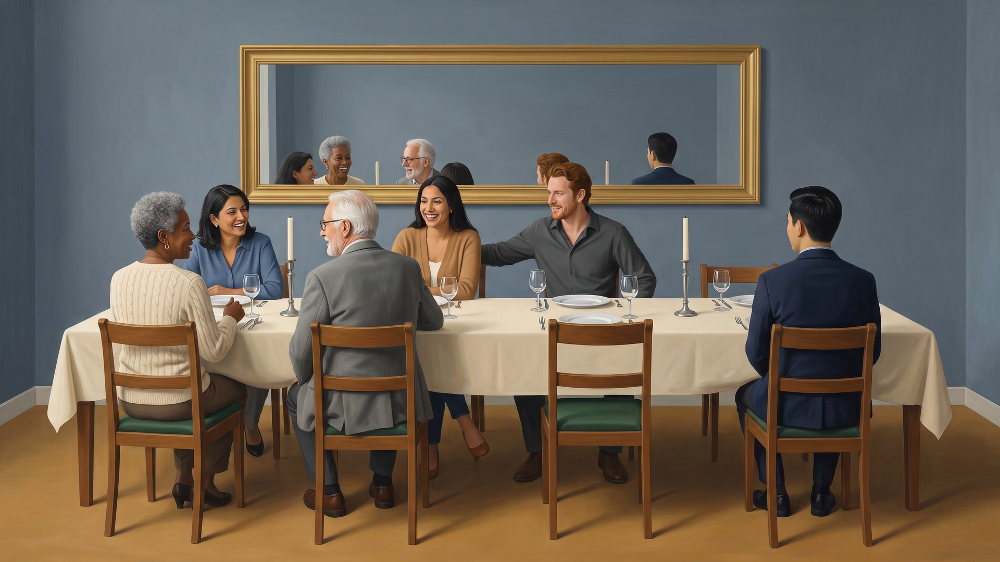

Essay
The naïveté that costs me.

Back in the early 2000s, BBDO’s slogan was “The Work. The Work. The Work.”
I was confused the first time I saw it. After all, what else could it be?
What could matter more than the quality of the agency’s output? Was something so obvious worth positioning a famous agency around?
Now more than twenty years into my career, I get it. I see it. The simple fact that the quality of your work is only a part (often the smallest part) of your success in an organization.
I was naïve. I still am. And it costs me.
The stubborn belief that, all things equal, better work is what matters, what wins pitches, what motivates clients, what creates authority, is ultimately wrong.
I can say that with high confidence.
What matters most is that the client likes you, personally. Or, the “relationship.”
Certainly, the best combination is the ability to do great work and build relationships. But the second best is definitely just the ability to build relationships. If I had a nickel for every time a decision was made because so-and-so had worked with someone before, was best friends with the CMO, or went way back, I’d… have a lot of nickels.
I find relationship building icky. I know that a conversation over dinner, asking about their kids and gossiping about common acquaintances, makes all the difference. I can’t bring myself to do it. The angling makes me queasy. I can’t bring myself to believe that any of it makes more difference than the quality of the work. And I am wrong. Billions of dollars of agency fees have been won and lost over knowing the names of a client’s labradoodles.
I am wrong, because I know it’s much harder for clients to be mean or reject someone they personally like.
I wonder if the clients even know it’s a performance. I can’t stand that I do.
It’s ironic that I’ll stay up all night to kern a deck but won’t cross a room to take the seat next to the client.
It’s also possible that I hide in the work because it’s what I feel like I control, whereas at a dinner table I’m constantly grappling with my social awkwardness. Craft as armor.
It’s also possible that I’m being selfish, because a leader who can’t build relationships threatens the good work of my team. A collective tax not worth any quality of work.
It’s also possible that I weaken my own effectiveness to really help clients, which I actually want to do, because I won’t invest in the relationship that convinces them to take a recommendation.
And it’s definitely possible that I’m just screwing myself and my ability to advance my career. I know I’m playing the game wrong.
But it’s not a principle if it doesn’t cost me.
And to that cost, I concede.
(Disclaimer: The opinions expressed here are mine alone and never reflect any policy, strategy, or opinion of any client or employer — past, present, or future.)